Olika platser.
Egna förutsättningar.
Från ett rum i trädgården till ett helt nytt hus. Här finns avslutade studier, pågående uppdrag och idéer som tar form.
Alla projekt
14 projekt visas
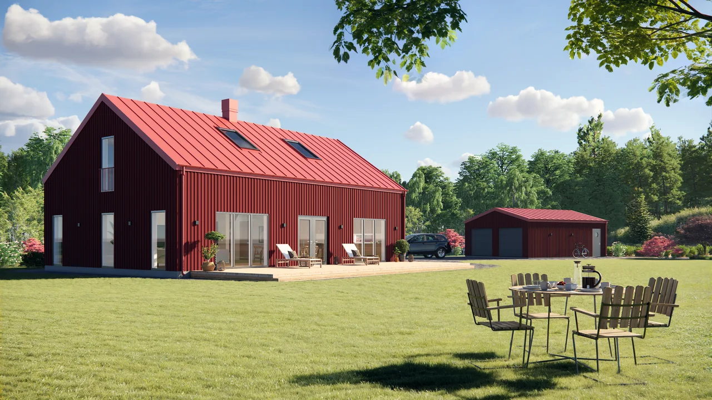
Villa Skogsglänta
Norra Skåne · Villa
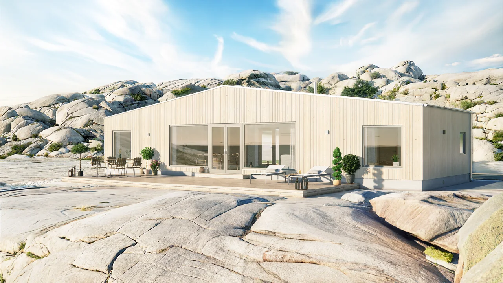
Villa Rhombus
Bohuslän · Villa / fritidshus
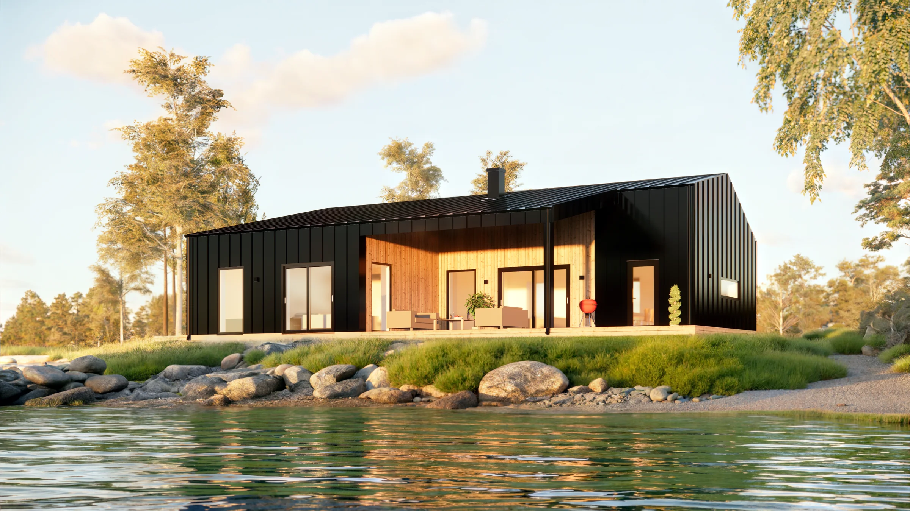
Fritidshus i Bureå
Bureå, utanför Skellefteå · Fritidshus

Tillbyggnad i Lysekil
Lysekils kommun · Tillbyggnad
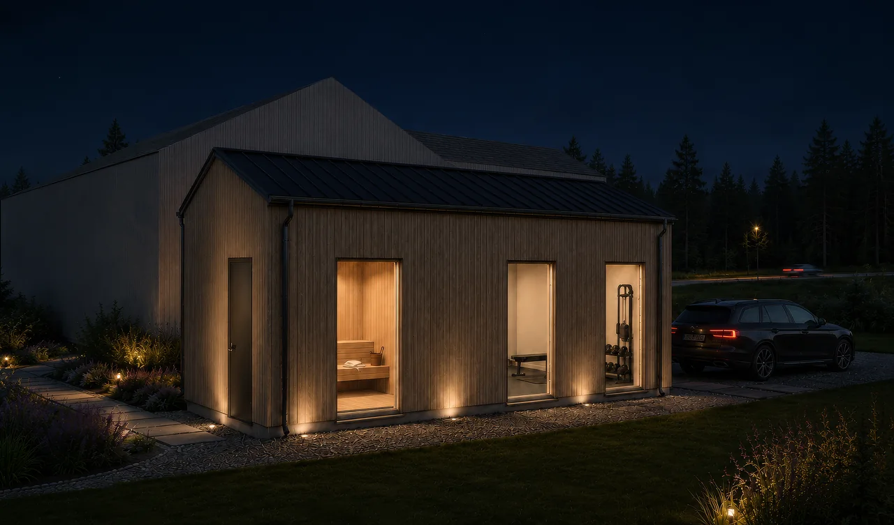
Gym- och bastuhuset
Kungsbacka · Komplementbyggnad
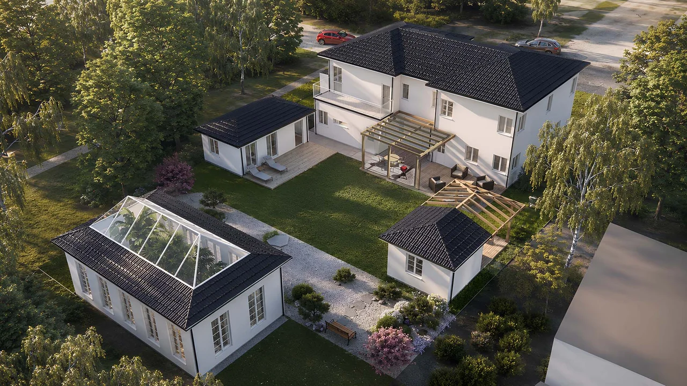
Gårdshus på Ekerö
Ekerö, Stockholm · Komplementbyggnader och orangeri

Ombyggnad i Höllviken
Höllviken · Ombyggnad
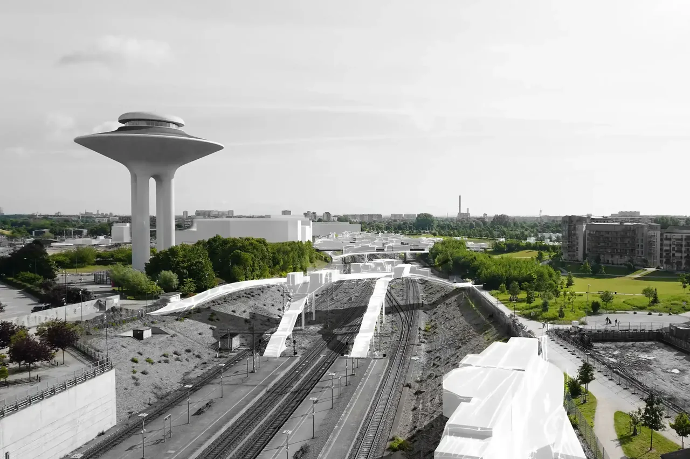
Mycorrhizal Involution
Hyllie, Malmö · Stadsbyggnad / tävling
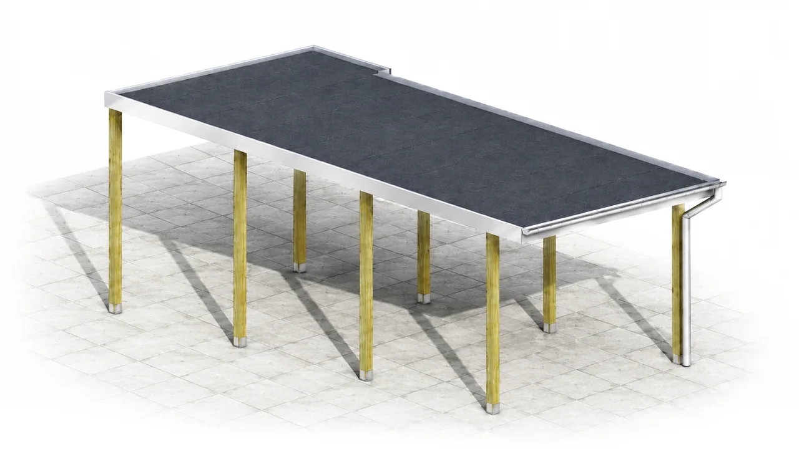
Carport i Vellinge
Vellinge · Komplementbyggnad

Halmhus #1
Arkitektskolan, Lund · Examensarbete / experimentbyggnad
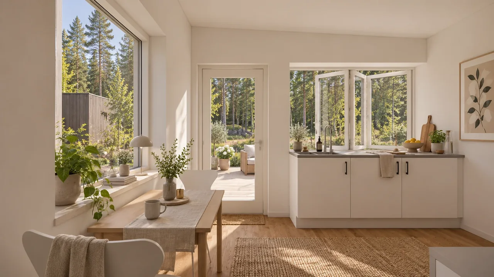
Komplementbyggnad för fritidshus
Skåne · Komplementbyggnad
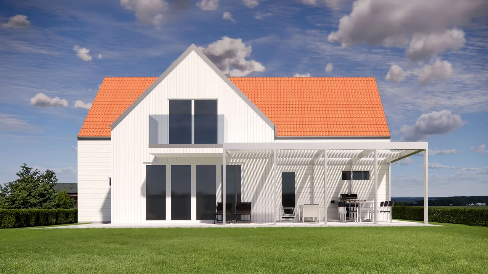
Pergola i Varberg
Varberg · Pergola / utemiljö
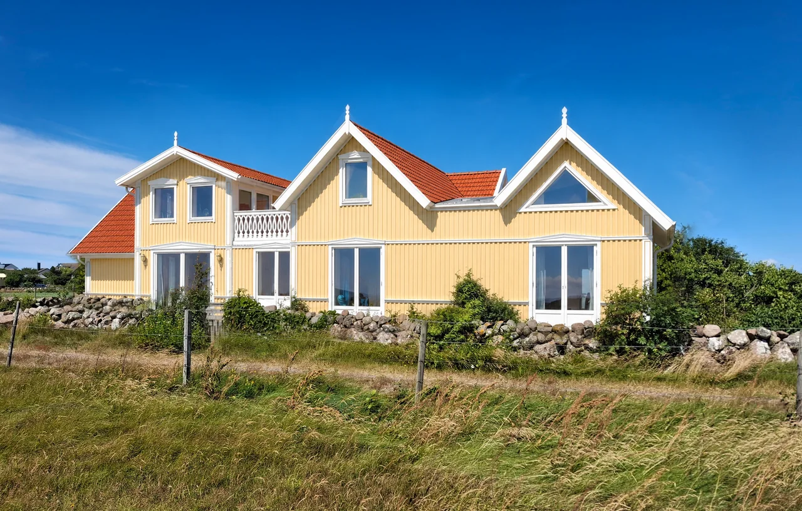
Omgestaltning i Varberg
Varberg · Omgestaltning och tillbyggnad
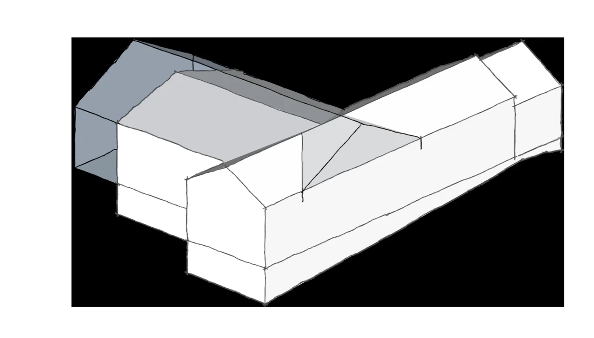
Tillbyggnad i Åhus
Åhus · Tillbyggnad
Vad vill du ge plats åt?
Ett hus att landa i. Ett extra rum. En idé som behöver en första skiss. Berätta vad du tänker, så börjar vi där.